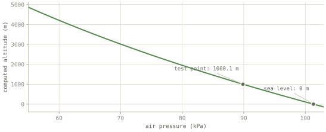
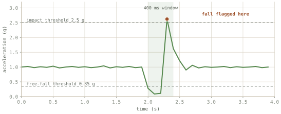

How it works
Four parts, one line of text between them.
Sensing happens on the wrist. Thinking happens in the pack. Between them runs one line of plain text, ten times a second. This page walks that path and flags every stand-in.
01 · The wrist unit
Three sensors, and one thing it refuses to report
The wrist unit carries three parts that each answer a different question. It is programmed in C that runs directly on the chip, with no operating system underneath it.
| The part | What it measures | What that is good for |
|---|---|---|
| BMP280 | Air pressure and temperature | Air thins predictably as you climb, so pressure gives you altitude. The temperature is the air around the device, not your body. |
| LIS3DH | Acceleration, three directions | Motion, and the particular signature of a fall. |
| MAX30102 | Light reflected off skin | Raw light readings, and deliberately nothing more. See below. |
Height from air pressure
Air gets thinner as you climb, predictably enough to run backwards: measure the pressure, calculate the height. This is the firmware line that does it.
float bmp280_pressure_to_altitude(float pressure_pa) {
return 44330.0f *
(1.0f - powf(pressure_pa / BMP280_SEA_LEVEL_PA, 0.1903f));
}
The catch, stated in the code too: the sea-level reference is a fixed number and real sea-level pressure moves with the weather. So the figure is trustworthy for change, "you have climbed 300 metres", and not for absolute elevation. It is not GPS.

What a fall looks like to a machine
In free fall an accelerometer reads near zero; on landing it reads a sharp spike. Either alone is ordinary. The firmware only calls it a fall when it sees both, in that order, within 400 milliseconds.

Label
A demonstration, not a medical-grade fall detector. The thresholds are untuned textbook values, and the source code says so in the same words.
No heart rate
The optical sensor shines light through your skin and measures what comes back. That signal does contain a pulse, but extracting it takes signal processing this project does not implement. So the site shows the raw light readings and calls them exactly that.
This is not a footnote. It is enforced in four places: the firmware only reports counts, the app has no field to put a heart rate in, the text sent to the model explicitly forbids inferring one, and a test fails if a heart rate ever appears. An invented vital sign is worse than no vital sign, because someone might act on it.
02 · The link
A cable doing a radio's job
In the finished idea, the wrist unit talks to the pack over a short-range radio. That radio does not exist yet. A small program does the same job over a wire: a line goes in and the identical line comes out, with no interpreting, reshaping, or fixing. Because the line is unchanged, the parts downstream genuinely cannot tell whether it came from a board, the browser simulator, or a recording.
It drops one thing only: the greeting the board prints at power-on, which has no timestamp and is therefore not a reading.
03 · The pack computer
The model is told what the sensors saw, and what not to conclude
The model is a small open one running locally with no internet. The engineering is what it is told, and what it is forbidden from doing. Every question carries a block of sensor readings written out in words, each with its limits attached:
DERIVED READINGS: - Altitude: 2.1 m (pressure-derived vs a fixed 101325 Pa sea-level reference; reliable for RELATIVE change only — NOT GPS or true elevation) - Temperature: 21.0 °C (AMBIENT air at the device — NOT body temperature) - Fall detected: YES (accelerometer free-fall→impact heuristic, not medical-grade) RAW SIGNALS (non-diagnostic): - Optical counts: red 10249, ir 10398. These are raw photodiode counts from the optical sensor. No pulse-extraction algorithm runs on this device: heart rate and blood-oxygen saturation (SpO2) are NOT available and must not be inferred from these numbers.
The last paragraph does the most work: it tells the model, inside the request itself, that the light readings are not vital signs and must not be turned into a pulse. A failed sensor reads "unavailable", never zero.
That is the real output of services/sensorContext.ts,
wrapped here to fit the column and shown without its opening and closing markers. The app
can show you the exact bytes it sent, on request.
One rule sits above all of it: if the readings disagree with what the person says, the person wins. A sensor on a wrist knows less than someone looking at their own leg.
When the wristband speaks first
If the accelerometer flags a fall, the assistant starts the conversation itself, with guidance for someone who may have just hit their head. One guard makes that workable: the wristband reports ten times a second, so a single fall arrives as a long run of identical "fall detected" readings. The trigger fires only when the answer changes from no to yes, then stays quiet for thirty seconds. One fall, one question.
const risingEdge = fallDetected && !prevFall; prevFall = fallDetected; if (!risingEdge) return false; if (suppressed) return false; // consumed, not queued if (nowMs - lastFiredMs < opts.cooldownMs) return false;
The real trigger code. The chart on the Proof page shows what it saves: 2 model calls instead of 150 over a minute of replay.
04 · The interface
Six steps, and one line that matters more than the rest
The answer comes back as at most six one-sentence steps, because the reader may be frightened, cold, and alone. It always ends with an evacuation line, and the app pulls that line out and displays it separately. Derived values and raw signals are kept visibly apart, and a failed reading shows a dash, never a zero.
Here is that behaviour, replayed:
A scripted replay of the app's screen. The response is the verbatim recorded output of the real local run; no model is running in this page.
Placeholders
Voice recording and wound photos are captured for real, but nothing transcribes or analyses them yet. Both are marked as placeholders in the code. And the word-by-word reveal above is display pacing: the complete answer arrives first, in the real app as in this demo.
Next: the receipts → test output you can re-run, a recorded conversation with the model, and the complete list of what is real and what is standing in.